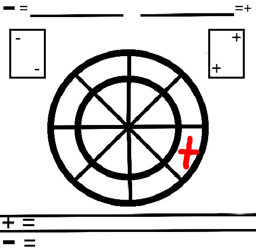
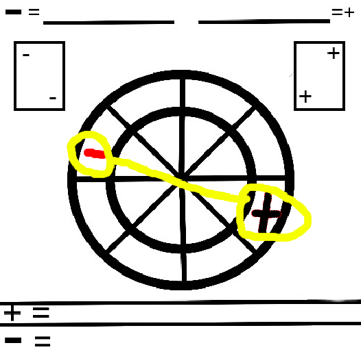
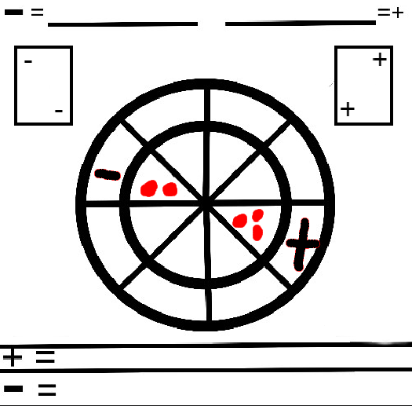
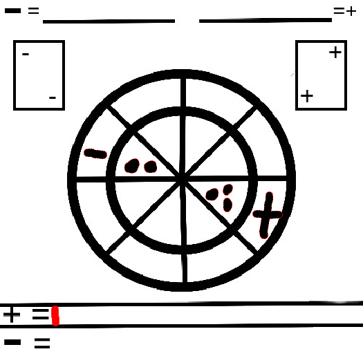
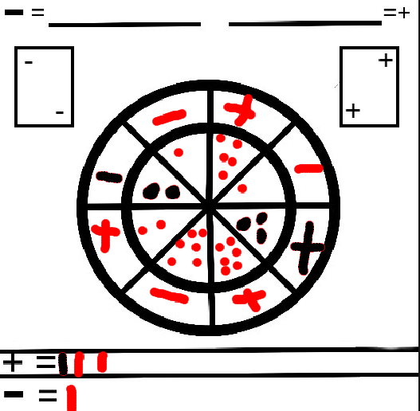
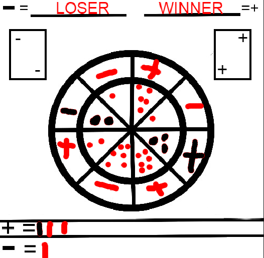
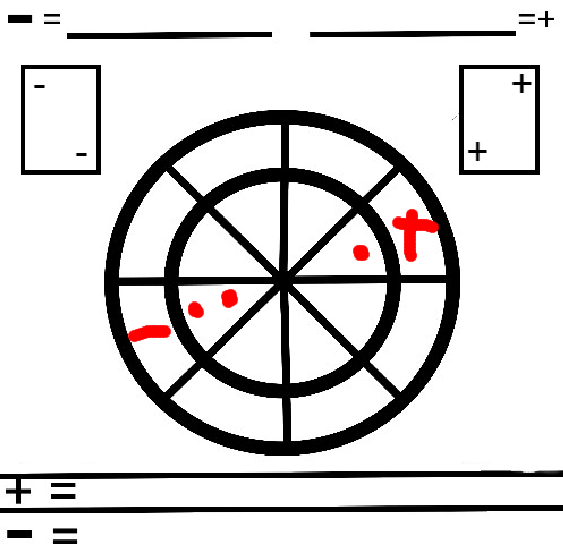
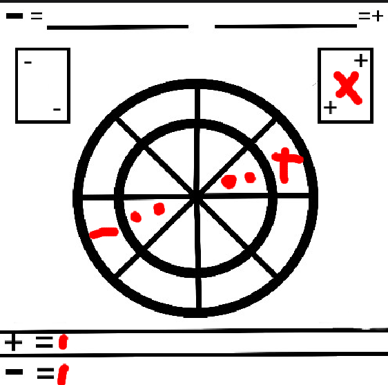

1.- The first player has to put a token on the outer circle of the board.
2.- The second player has to place his token on the outer circle of the board so that the two tokens face each other.
3.- Now, the first player rolls the white dice located in the upper left corner and the second player rolls the black dice located in the upper right corner, the score each gets should be written in front of them in the inner circle.
4.- In this case, the plus player got 3 and the minus player got 2, since 3 is greater than 2 the plus player won this round.
5.- The two players have to repeat this process until they fill the entire board with tiles.
6.- in this case, the plus player won more rounds than the minus player, so the plus player won the whole game
1.- In this new game player minus won this round, because 2 is greater than 1
2.- But player plus used a POWER-UP and won that round, but how do POWER-UPS work?
3.- A POWER-UP is a special ability that allows you to multiply, add and do many other things to your score in order to win a round.
4.- These are all the power-ups:
ADD:
If you use this power-up, you will add 2 points to your score.
REMOVE:
If you use this power-up the other player will lose two points.
MULTIPLY:
if you use this power-up your score will be multiplied by two
SPLIT
If you use this power-up, the other player's score will be divided by two.
SQUARE ROOT
If you use this power-up, the other player's score will become its square root.
NOTE
You can use a power-up only one time and you can use it any time
NOTE
In the calculator you can see if a number is greather, less, or equal